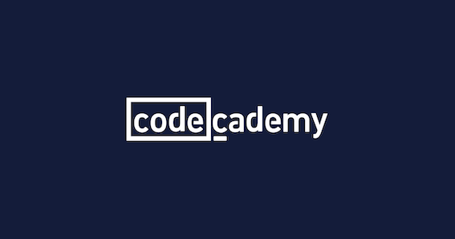

Code
“Coding has become one of my newest hobbies and I’m loving it! Being such a large industry there seems like an endless supply of information and knowledge for technology. I love problem solving, brain teasers, math equations and the patterning of code. There is always something new to learn and implement. I’ve started my first student program at Coder Academy. The ability to work remotely has been very appealing to me since the recent covid pandemic also ties into wanting to travel in the future. I’m very grateful I get to experience the on campus learning experience at Codecademy”